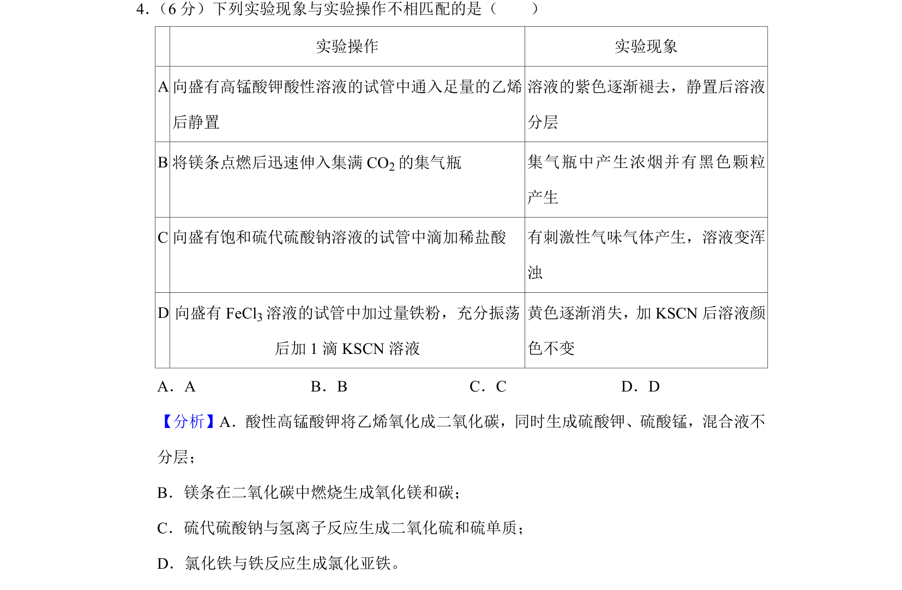
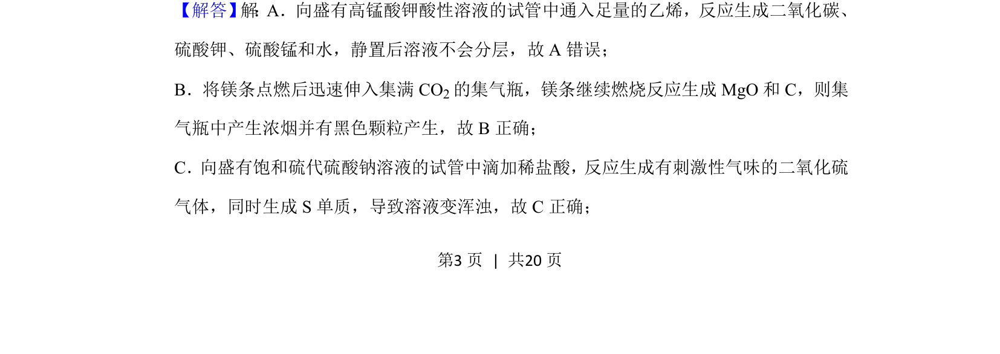
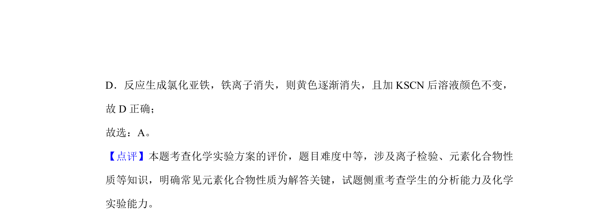

考点：实验操作 实验现象 氧化还原反应

考查化学实验操作与现象是否匹配，涉及氧化还原反应、气体生成及物质性质判断


📄 原 PDF 第 3 页：
素材/真题/吉林/2008-2024·（吉林）化学高考真题/2019年高考化学试卷（新课标Ⅱ）（解析卷）.pdf
4． （6分）下列实验现象与实验操作不相匹配的是（ ） 实验操作 实验现象 A向盛有高锰酸钾酸性溶液的试管中通入足量的乙烯 后静置 溶液的紫色逐渐褪去，静置后溶液 分层 B将镁条点燃后迅速伸入集满CO 2的集气瓶 集气瓶中产生浓烟并有黑色颗粒 产生 C向盛有饱和硫代硫酸钠溶液的试管中滴加稀盐酸 有刺激性气味气体产生，溶液变浑 浊 D 向盛有FeCl 3溶液的试管中加过量铁粉，充分振荡 后加1滴KSCN溶液 黄色逐渐消失，加KSCN后溶液颜 色不变 A．A B．B C．C D．D
【分析】A．酸性高锰酸钾将乙烯氧化成二氧化碳，同时生成硫酸钾、硫酸锰，混合液不 分层； B．镁条在二氧化碳中燃烧生成氧化镁和碳； C．硫代硫酸钠与氢离子反应生成二氧化硫和硫单质； D．氯化铁与铁反应生成氯化亚铁。 【解答】 解 ：A．向盛有高锰酸钾酸性溶液的试管中通入足量的乙烯，反应生成二氧化碳、 硫酸钾、硫酸锰和水，静置后溶液不会分层，故A错误； B．将镁条点燃后迅速伸入集满CO 2的集气瓶，镁条继续燃烧反应生成MgO和C，则集 气瓶中产生浓烟并有黑色颗粒产生，故B正确； C．向盛有饱和硫代硫酸钠溶液的试管中滴加稀盐酸，反应生成有刺激性气味的二氧化硫 气体，同时生成S单质，导致溶液变浑浊，故C正确；